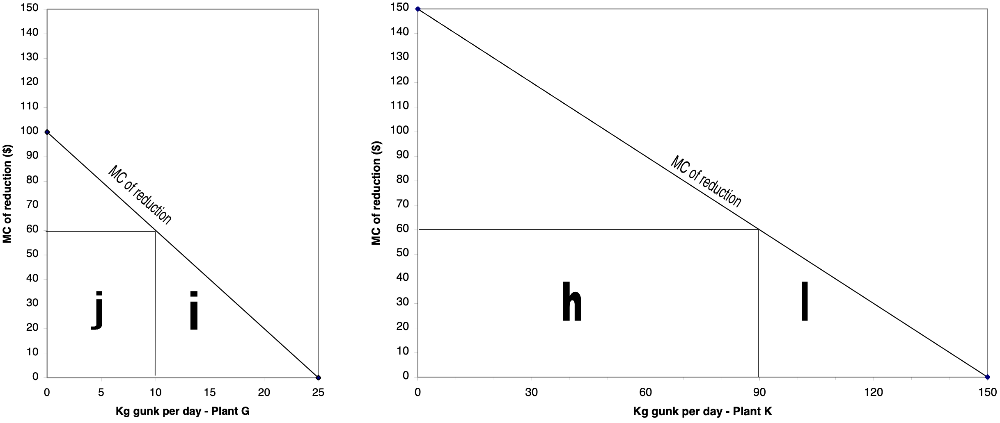

ECON 340: Homework Assignment 5
Question 1. Cost-effective Gunk Control
Two plants are emitting a uniformly mixed pollutant called gunk into the beautiful sky over Tourist Town. The city government decides that it can tolerate total emissions of no more than 100 kgs of gunk per day. Plant \(G\) has marginal reduction costs of \(100 - 4x\), and is currently polluting at a level of 25, while plant \(K\) has marginal reduction costs of \(150 - y\), and currently pollutes at a level of 150. (\(x\) and \(y\) are the level of emissions at each plant).
Q1a.
What is the cost effective pollution level for each plant if total pollution must equal 100? Suppose the city government knows marginal reduction costs at the two plants. In this case could the city obtain cost effective pollution reduction using a CAC approach? If so, how?
Answer:
- We know two things:
\[ \begin{matrix} x+y=100\; & \text{(total pollution equals 100)}\\ 100-4x = 150-y &\text{(marginal reduction costs at both plants are equal)} \end{matrix} \]
- The second condition must hold for the solution to be cost-effective. One can now solve for the two unknowns, \(x\) and \(y\). The result is \(x=10\) and \(y=90\). (Check: marginal reduction costs equal \(60\) for both firms).
Q1b.
In reality, why might the city have a hard time getting this information? What are the two “Incentive Based” policies that could be used to get a cost effective reduction of pollution to 100 units, without knowing the MC of the two firms? Be specific. Discuss two advantages each method has over the other.
Answer:
The cost of pollution reduction is plant specific, and is probably known (roughly) only by the plant’s engineers and managers. The city council could impose a pollution tax equal to $60 per Kg; or it could issue 100 marketable permits. At a tax of $60, plant \(G\) would cut back to 10 units of pollution, since for units 25 to 10, cutting back is cheaper than paying the tax. Below 10 units however, the firm would rather pay the tax than cut back. For similar reasons, plant \(K\) would cut back to 90 units.
If 100 permits were issued, the two plants would have an incentive to buy and sell them until plant \(G\) wound up with 10 permits, and plant \(K\) 90.
Disadvantages of taxes vis-à-vis permits: the regulators would not know where exactly to set the tax to get at most 100 units of pollution. The tax would have to be imposed, than adjusted. In addition, firms bear a higher cost. (See Q1c. below)
Disadvantages of permits vis-à-vis taxes: issues of thin markets and market power are avoided. Revenues to the government provide an incentive for enforcement.
Q1c.
Suppose the authorities are considering a tradeable emission permit system in which they give half the permits to each firm, or a tax system. If both systems work perfectly, how much will the firms have to pay, in total, for pollution reduction under the two schemes? Could this explain why Tourist Town would be more likely to adopt a permit give-away system?
Answer:
For this one, it is best to draw graphs for each firm.
Under the tax system, the firms will have to pay clean-up costs equal to the triangles \(i\) and \(l\). In addition, they will have to pay taxes equal to the rectangles \(j\) and \(h\).
\[ \begin{align} \text{Cost for plant } G &= \frac{1}{2}\times 15 \times 60 + 10 \times 60 = 1050\\ \text{Cost for plant } K &= \frac{1}{2}\times 60 \times 60 + 90 \times 60 = 7200 \end{align} \]
Under the permit system, each plant will begin with 50 permits, but we know that they will trade until plant \(K\) has 90 permits and plant \(G\) has 10. Thus, each plant still faces the same clean-up costs, areas \(i\) and \(l\). But how much will they have to pay for permits? If we assume that permits sell at the market clearing price of $60, plant \(K\) will have to buy 40 permits from plant \(G\).
\[ \begin{align} \text{Cost for plant } G &= \frac{1}{2}\times 15 \times 60 - 40 \times 60 = -1950\\ \text{Cost for plant } K &= \frac{1}{2}\times 60 \times 60 + 40 \times 60 = 4200 \end{align} \]
From the firm’s perspective, the permit give-away is much preferred: plant \(G\) actually profits from the sale of permits to the tune of 1950.
Q1d.
Several theoretical studies have shown that Incentive Based policies might generate huge cost savings, with the IB approach being as much as 22 times cheaper as a CAC approach. Discuss at least three reasons why Tourist Town might not get such substantial savings in moving from CAC regulation to a marketable permit system.
Answer:
- Here’s a list.
- Market power
- Thin markets
- Monitoring and compliance
- Perverse relocation incentive
- We can explain how each of these obstacles might reduce the potential for cost-saving from IB regulation.
Q1e.
Would a CAC system in Tourist Town generate benefits in the form of either “over-control” or a reduction in hot-spots, relative to an incentive-based approach?
Answer:
No. Both overcontrol and a reduction in hot-spots from CAC regulation would only occur for a non-uniformly mixed pollutant. The problems states that gunk is a uniformly-mixed pollutant.
Q1f.
Suppose the marginal benefits of pollution reduction in Tourist Town are constant and equal to $64. (Each unit of pollution reduction brings in one more tourist, who spends $64.). Is 100 units of pollution, obtained cost effectively, an efficient level? If not, will efficiency be achieved through more or less pollution? Why?
Answer:
100 units of pollution is still too much from an efficiency perspective. At 100 units, the marginal cost of reduction is $60, while the marginal benefit is $64. For efficiency, total pollution should be reduced back to 95 units, with plant \(G\) polluting 9 and plant \(K\) polluting 86. In this case, the marginal cost of reduction is now $64 at each plant.
\[ \begin{align} MC_{G} &= 100 - 4\times9=64;\\ MC_{K} &= 150 - 86 = 64 \end{align} \]